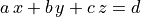
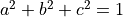
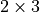

File and Directory Formats¶
Tessellation File (.tess)¶
Here are details on the .tess file format version
2.0. Developers should note that read and write functions are
available as neut_tess_fscanf and neut_tess_fprintf,
defined in directories neut/neut_tess/neut_tess_fscanf
and
neut/neut_tess/neut_tess_fprintf.
***tess
**format
<format>
**general
<dim> <type>
**cell
<number_of_cells>
[*id
<cell1_id> <cell2_id> ... ]
[*seed
<seed_id> <seed_x> <seed_y> <seed_z> <seed_weight>
... ]
[*ori
<descriptor>
<cellid_param1> <cellid_param2> ...
... ]
[*orispread
<cellid_spread>
... ]
[*lam
<cell1_lam> <cell2_lam> ... ]
[*mode
<cell1_mode> <cell2_mode> ... ]
[*crysym
<crysym>]
**vertex
<total_number_of_vertices>
<ver_id> <ver_x> <ver_y> <ver_z> <ver_state>
...
**edge
<total_number_of_edges>
<edge_id> <ver_1> <ver_2> <edge_state>
...
**face
<total_number_of_faces>
<face_id> <number_of_vertices> <ver_1> <ver_2> ...
<number_of_edges> <edge_1*> <edge_2*> ...
<face_eq_d> <face_eq_a> <face_eq_b> <face_eq_c>
<face_state> <face_point> <face_point_x> <face_point_y> <face_point_z>
...
**polyhedron
<total_number_of_polyhedra>
<poly_id> <number_of_faces> <face_1*> <face_2*> ...
...
**domain
*general
<dom_type>
*vertex
<total_number_of_dom_vertices>
<dom_ver_id> <dom_ver_x> <dom_ver_y> <dom_ver_z> <dom_ver_label>
<number_of_dom_tess_vertices> <ver_1>
...
*edge
<total_number_of_dom_edges>
<dom_edge_id> <number_of_dom_vertices> [<dom_ver_1> <dom_ver_2>]
<dom_edge_label>
<number_of_dom_tess_edges> <edge_1> <edge_2> ...
...
*face
<total_number_of_dom_faces>
<dom_face_id> <number_of_dom_vertices> <dom_ver_1> <dom_ver_2> ...
<number_of_dom_edges> <dom_edge_1> <dom_edge_2> ...
<dom_face_type>
<number_of_params> <dom_face_param1> <dom_face_param2> ...
<dom_face_label>
<number_of_dom_tess_faces>
<dom_tess_face_1> <dom_tess_face_2> ...
...
**periodic
*general
<per_x> <per_y> <per_z>
<per_dist_x> <per_dist_y> <per_dist_z>
*seed
<secondary_seed_qty>
<secondary_seed_id> <primary_seed_id> <per_shift_x> <per_shift_y> <per_shift_z>
...
*vertex
<secondary_ver_qty>
<secondary_ver_id> <primary_ver_id> <per_shift_x> <per_shift_y> <per_shift_z>
...
*edge
<secondary_edge_qty>
<secondary_edge_id> <primary_edge_id> <per_shift_x> <per_shift_y> <per_shift_z> <secondary_edge_ori>
...
*face
<secondary_face_qty>
<secondary_face_id> <primary_face_id> <per_shift_x> <per_shift_y> <per_shift_z> <secondary_face_ori>
...
**scale
*general
<number_of_scales>
*cellid
<cell1_id> <cell1_scale1> <cell1_scale2> ...
...
***end
where (with identifiers being integer numbers),
***tessdenotes the beginning of a tessellation file.**formatdenotes the beginning of the format field.formatis the file format, currently 2.0 (character string).**generaldenotes the beginning of the general information field.dimis the dimension of the tessellation (1, 2 or 3).typeis the type of tessellation (alwaysstandard).**celldenotes the beginning of the cell field.number_of_cellsis the number of cells.*iddenotes the beginning of an optional identifier field. It the field is not present, the cells are considered to be numbered contiguously from 1.cell1_id,cell2_id, … are the actual identifiers of the cells.*lamdenotes the beginning of an optional lamella identifier field.cell1_lam,cell2_lam, … are the lamella identifiers of the cells.*modedenotes the beginning of an optional mode identifier field.cell1_mode,cell2_mode, … are the mode identifiers of the cells.crysymis the crystal symmetry (triclinic,cubicorhexagonal).*seeddenotes the beginning of a seed field.seed_idis the identifier of a seed and ranges from1tonumber_of_cells.seed_x,seed_yandseed_zare the three coordinates of a seed (real numbers).seed_weightis the weight of a seed (real number).*oridenotes the beginning of an optional crystal orientation field.descriptoris the descriptor used to parameterize the crystal orientations. See Rotations and Orientations for the list of available descriptors.cellid_param1,cellid_param2, … are the values of the orientation descriptor of cell id.*orispreaddenotes the beginning of an optional crystal orientation distribution field.cellid_spreadis the value of the orientation distribution of cell id.**vertexdenotes the beginning of the vertex field.total_number_of_verticesis the total number of vertices.ver_idis the identifier of a vertex and ranges from1tototal_number_of_vertices.ver_x,ver_yandver_zare the three coordinates of a vertex (real numbers).ver_stateis an integer indicating the state of a vertex. For a standard tessellation (no regularization), it equals0. For a regularized tessellation, it equals0if the vertex has not been modified by regularization and is higher than0otherwise.**edgedenotes the beginning of the edge field.total_number_of_edgesis the total number of edges.edge_idis the identifier of an edge and ranges from1tototal_number_of_edges.ver_1,ver_2, … are identifiers of vertices.edge_stateis an integer indicating the state of an edge (always0).**facedenotes the beginning of the face field. It is present for a tessellation of dimension 2 or 3.total_number_of_facesis the total number of faces.face_idis the identifier of a face and ranges from1tototal_number_of_faces.number_of_verticesis the number of vertices of a face.number_of_edgesis the number of edges of a face.edge_1*,edge_2*, … are identifiers of the edges of a face, signed according to their orientation in the face.face_eq_a,face_eq_b,face_eq_candface_eq_dare the parameters of the equation of a face:  with .face_stateis an integer indicating the state of a face. For a standard tessellation (no regularization), it equals0. For a regularized tessellation, it equals0if it has not been modified by regularization and1otherwise.face_pointis an integer indicating the point used for the interpolation of a face. For a standard tessellation (no regularization), it equals0. For a regularized tessellation: if the point is the face barycenter, it equals0; if the point is one of the face vertices, it equals to the position of the vertex in the list of vertices of the face. It equals-1if the point is undefined.face_point_x,face_point_yandface_point_zare the coordinates of the point used for the interpolation of a face (equal0if undefined).**polyhedrondenotes the beginning of the polyhedron field. It is present for a tessellation of dimension 3.total_number_of_polyhedrais the total number of polyhedra.poly_idis the identifier of a polyhedron and ranges from1tototal_number_of_polyhedra.number_of_facesis the number of faces of a polyhedron.face_1*,face_2*, … are identifiers of the faces of a polyhedron, signed according to their orientations in the polyhedron (positive if the normal of the face is pointing outwards and negative if it is pointing inwards).**domaindenotes the beginning of the domain field.*generaldenotes the beginning of the domain general information field.dom_typeis the type of the domain (one ofcube,cylinder,square,circle,polyandplanes).*vertexdenotes the beginning of the domain vertex field.total_number_of_dom_verticesis the total number of domain vertices.dom_ver_idis the identifier of a domain vertex and ranges between1tototal_number_of_dom_vertices.dom_ver_x,dom_ver_yanddom_ver_zare the three coordinates of a domain vertex (real numbers).dom_ver_labelis the label of a domain vertex, formatted asx0y0z0,x1y0z0,x0y1z0,x1y1z0,x0y0z1, … (for a cubic domain).number_of_dom_tess_verticesis the number of tessellation vertices of a domain vertex (must be 1).*edgedenotes the beginning of the domain edge field (for a tessellation of dimension 2 or 3).total_number_of_dom_edgesis the total number of domain edges.dom_edge_idis the identifier of a domain edge and ranges between1tototal_number_of_dom_edges.number_of_dom_verticesis the number of domain vertices of a domain edge or a domain face.dom_ver_1,dom_ver_2, … are identifiers of the domain vertices of a domain edge or face.dom_edge_labelis the label of a domain edge, formatted asx0y0,x0y1,x1y0, … (for a cubic domain).number_of_dom_tess_edgesis the number of tessellation edges of a domain edge.*facedenotes the beginning of the domain face field (for a tessellation of dimension 3).total_number_of_dom_facesis the total number of domain faces.dom_face_idis the identifier of a domain face and ranges from1tototal_number_of_dom_faces.number_of_dom_edgesis the number of domain edges of a domain face.dom_edge_1,dom_edge_2, … are identifiers of the domain edges of a domain face.dom_face_typeis the type of a face, among plane, cylinder or sphere.number_of_paramsis the number of parameters of a domain face.dom_face_param1,dom_face_param2, … are the parameters of a domain face. For a planar face, they are the parameters of the equation of the face, listed in the orderface_eq_d,face_eq_a,face_eq_bandface_eq_c. For a cylindrical face, they are the coordinates of the base point, the axis and the radius. For a spherical face, they are the coordinates of the center and the radius.dom_face_labelis the label of a domain face, formatted asx0,x1,y0,y1,z0orz1(for a cubic domain). For a cylindrical domain, it is formatted asz0,z1,f1,f2, … Otherwise, it is one off1,f2, … Edge and vertex labels are derived accordingly.number_of_dom_tess_facesis the number of tessellation faces of a domain face.dom_tess_face_1,dom_tess_face_2, … are the identifiers of the tessellation faces of a domain face.***enddenotes the end of a tessellation file.**periodicitydenotes the beginning of the periodicity field.*generaldenotes the beginning of the periodicity general information field.per_x,per_yandper_zare booleans indicating x, y, and z periodicity.per_dist_x,per_dist_yandper_dist_zare the periodicity distances along x, y, and z.*seeddenotes the beginning of the periodicity seed field.secondary_seed_qtyis the number of secondary seeds.secondary_seed_idis the identifier of a secondary seed.primary_seed_idis the identifier of the primary of a secondary seed.per_shift_x,per_shift_yandper_shift_zare the shifts of a secondary seed (or vertex, etc.) relative to its primary, along x, y and z. The values can be -1, 0 or 1.*vertexdenotes the beginning of the periodicity vertex field.secondary_vertex_qtyis the number of secondary vertices.secondary_vertex_idis the identifier of a secondary vertex.primary_vertex_idis the identifier of the primary of a secondary vertex.*edgedenotes the beginning of the periodicity edge field.secondary_edge_qtyis the number of secondary edges.secondary_edge_idis the identifier of a secondary edge.primary_edge_idis the identifier of the primary of a secondary edge.secondary_edge_oriis the orientation of the secondary edge with respect to the primary edge:1if identical,-1if opposite.*facedenotes the beginning of the periodicity face field (for a tessellation of dimension 3).secondary_face_qtyis the number of secondary faces.secondary_face_idis the identifier of a secondary face.primary_face_idis the identifier of the primary of a secondary face.secondary_face_oriis the orientation of the secondary face with respect to the primary face:1if identical,-1if opposite.number_of_scalesis the number of scales.cell1_scale1,cell1_scale2, … are the identifiers of the cells of the scale-1, scale-2, … tessellations which the cell belongs to.
Raster Tessellation File (.tesr)¶
Here are details on the .tesr file format version 2.1 (format 2.0 was used up to version 4.1.2 and can still be read). Developers should note that read and write functions are available as neut_tesr_fscanf and neut_tesr_fprintf, defined in directories neut/neut_tesr/neut_tesr_fscanf and neut/neut_tesr/neut_tesr_fprintf. Compared to a tessellation file (.tess), a raster tessellation file in enriched by cell morphological properties (centroids, etc.) as they are computed by option -statcell, which makes it possible to later retrieve them rapidly.
***tesr
**format
<format>
**general
<dimension>
<size_x> <size_y> [<size_z>]
<voxsize_x> <voxsize_y> [<voxsize_z>]
[*origin
<origin_x> <origin_y> [<origin_z>]]
[*hasvoid <has_void>]
[**cell
<number_of_cells>
[*id
<cell1_id> <cell2_id> ...]
[*seed
<seed_id> <seed_x> <seed_y> [<seed_z>] <seed_weight>
...]
[*ori
<descriptor>
<cell1_param1> <cell1_param2> ...
<cell2_param1> <cell2_param2> ...
...]
[*orispread
<cellid_spread>
... ]
[*coo
<cell1_x> <cell1_y> [<cell1_z>]
<cell2_x> <cell2_y> [<cell2_z>]
...]
[*vol
<cell1_vol>
<cell2_vol>
...]
[*convexity
<cell1_convexity>
<cell2_convexity>
...]
]
[*crysym
<crysym>
]
**data
<data_format>
<vox1_cell> <vox2_cell> ...
or
*file <data_file_name>
[**oridata
<descriptor>
<oridata_format>
<vox1_param1> <vox1_param2> ...
<vox2_param1> <vox2_param2> ...
or
<descriptor>
*file <oridata_file_name>
]
***end
where
***tesrdenotes the beginning of a raster tessellation file.**formatdenotes the beginning of the format field.formatis the file format, currently 2.0 (character string).**generaldenotes the beginning of the general information field.dimensionis the dimension of the raster tessellation.size_x,size_yandsize_zare the raster sizes along the coordinate axes. The number of sizes must match dimension.voxsize_x,voxsize_yandvoxsize_zare the voxel (pixel, in 2D) sizes along the coordinate axes. The number of sizes must match dimension.*origindenotes the beginning of an optional origin field.origin_x,origin_yandorigin_zare the (absolute) coordinates of the origin of the raster tessellation along the coordinate axes. The number of coordinates must match dimension.*hasvoiddenotes the beginning of an optional has-void field.has_voidis a boolean indicating whether the tessellation contains void voxels (which have a cell id of 0).**celldenotes the beginning of an optional cell field.number_of_cellsis the number of cells.*iddenotes the beginning of an optional identifier field. If the field is present, the cell identifiers listed under**dataare supposed to be numbered contiguously from 1 (or 0 in case of void), and their actual identifiers are considered to be the ones provided in the list. The actual identifiers are used in output files.cell1_id,cell2_id, … are the actual identifiers of the cells.*seeddenotes the beginning of a seed field.seed_idis the identifier of a seed and ranges from1tonumber_of_cells.seed_x,seed_yandseed_zare the three coordinates of a seed (real numbers).seed_weightis the weight of a seed (real number).*oridenotes the beginning of an optional crystal orientation field.descriptoris the descriptor used to parametrize the crystal orientations. See Rotations and Orientations for the list of available descriptors.cellid_param1,cellid_param2, … are the values of the orientation descriptor of cell id.*orispreaddenotes the beginning of an optional crystal orientation distribution field.cellid_spreadis the value of the orientation distribution of cell id.*coodenotes the beginning of an optional centroid field.cellid_x,cellid_yandcellid_zare the coordinates of the centroids of cell id.*voldenotes the beginning of an optional volume field.cellid_volis the volume of cell id.*convexitydenotes the beginning of an optional convexity field.cellid_convexityis the convexity of cell id.*crysymdenotes the beginning of an optional crystal symmetry field.crysymis the crystal symmetry (triclinic,cubicorhexagonal).**datadenotes the beginning of the data field. Data can be provided in the.tesrfile or in a separate file, using*file, see below.data_formatis the format of the data. It can be eitherascii,binary8(8-bit binary),binary16(16-bit binary, Little-Endian),binary16_big(16-bit binary, Big-Endian),binary32(32-bit binary, Little-Endian) orbinary32_big(32-bit binary, Big-Endian).voxid_cellis the cell voxelidbelongs to. Voxels must be listed in column-major order (x varying first, y varying second and z varying last). The cell identifiers should start from 1. Use 0 for voids.*filedenotes the beginning of a file field.data_file_nameis the name of a file that contains the data. It must be located in the same directory as the parent tesr file, or its path relative to the parent tesr file must be provided. Typically, it is a.rawfile.**oridatadenotes the beginning of the orientation data field. Data can be provided in the.tesrfile or in a separate file, using*file, see below.oridata_formatis the format of the data. It can be eitherasciiorbinary(double-precision number).voxid_param1,voxid_param2, … are the values of the orientation descriptor of voxel id. Orientations must be listed in column-major order (x varying first, y varying second and z varying last). Arbitrary orientations can be used for void voxels (voxid_cell= 0`). These data must be written under format data_format, in terms of ASCII or binary. In the case of binary format, double-precision numbers are considered.oridata_file_nameis the name of a file that contains the orientation data. It must be located in the same directory as the parent tesr file, or its path relative to the parent tesr file must be provided. Typically, it is a.rawfile.
Multiscale Cell File¶
A multiscale cell file provides cell-by-cell values for a multiscale tessellation and can be loaded using msfile(<file_name>) [1]. The file contains, for each cell, its multiscale identifier, mid, and the value(s). A cell multiscale identifier (mid) is a character string identifying a cell at a specific scale. For a given cell, C, mid combines the identifiers of the cells that C belongs to, at successive scales, to its own id, separated by ::. For a 1-scale tessellation, mid equals id. For a 2-scale tessellation composed of  cells, the mid values are equal to 1::1, 1::2, 1::3, 2::1, 2::2 and 2::3. The domain (which can be considered as a cell at scale 0), mid is nil. An example of a multiscale cell file that could be used to define the numbers of cells of a 3-scale tessellation is:
2
1 2
2 4
1::1 3
1::2 4
2::1 5
2::2 6
2::3 7
2::4 8
The file could be used in -T as -n msfile(<file_name>)::msfile(<file_name>)::msfile(<file_name>). The first instance of msfile(<file_name>) reads the number of scale-1 cells in line 1, the second instance of msfile(<file_name>) reads the number of scale-2 cells in lines 2–3, and the third instance of msfile(<file_name>) reads the number of scale-3 cells in lines 4–7.
Data File¶
A data file provides a number of data to be assigned to seeds, cells, points, etc. It must contain the expected number of data. It is a general, simply-formatted ASCII file that only contains one data per entity, and the data can be an integer or a real number. A real number can have an arbitrary number of digits, but the decimal mark must be .. The data can be separated from each other by spaces, tabulators or newlines (any number as well as arbitrary combinations of them are supported). However, a good practice is to format the file with one data per line. An example of a data file containing 5 points in 3D is:
2.1235
5.9564
2.2547
8.2515
0.5874
Position File¶
A position file lists the coordinates of a given number of points. The file must contain 1 coordinate per point in 1D, 2 coordinates per point in 2D and 3 coordinates per point in 3D. While the dimension can be known from the context in which the file is read, it can also be specified by appending :dim to the name of the position file, where dim is the dimension. A coordinate can be an integer or real number. A real number can have an arbitrary number of digits, but the decimal mark must be .. The coordinates can be separated from each other by spaces, tabulators or newlines (any number as well as arbitrary combinations of them are supported). However, a good practice is to format the file with one point per line. An example of a position file containing 5 points in 3D is:
2.1235 9.4544 5.2145
5.9564 3.6884 9.2145
2.2547 3.2658 8.2514
8.2515 9.4157 2.9454
0.5874 4.2848 2.4874
Mesh File (.msh)¶
Here are details on the native .msh (adapted from Gmsh’s msh format version 2.2). Developers should note that read and write functions are available as neut_msh_fscanf and neut_msh_fprintf, defined in directories neut/neut_msh/neut_msh_fscanf and neut/neut_msh/neut_msh_fprintf.
$MeshFormat
2.2 <file_type> <data_size>
$EndMeshFormat
$MeshVersion
2.2 <mesh_version>
$EndMeshVersion
$Domain
<domain>
$EndDomain
$Topology
<reconstruct_topology>
$EndTopology
$Nodes
<number_of_nodes>
<node_id> <node_x> <node_y> <node_z>
...
$EndNodes
$Elements
<number_of_elements>
<elt_id> <elt_type> <number_of_tags> <tag1> ... <elt_id_node1> ...
...
$EndElements
$Periodicity
<number_of_periodicities>
<secondary_node_id> <primary_node_id> <per_vect_x> <per_vect_y> <per_vect_z>
...
$EndPeriodicity
$NSets
<number_of_nsets>
<nset1_label>
<nset_node_nb>
<nset_node1>
<nset_node2>
...
<nset2_label>
...
$EndNSets
$Fasets
<number_of_fasets>
<faset1_label>
<faset_elt_nb>
<faset_elt_id> <faset_elt_id_node1> ...
...
<faset2_label>
...
$EndFasets
$NodePartitions
<number_of_nodes>
<node_id> <node_partition>
...
$EndNodePartitions
$PhysicalNames
<number_of_physical_names>
<physical_dimension> <physical_id> <physical_name>
...
$EndPhysicalNames
$ElsetOrientations
<number_of_elsets> <orientation_descriptor>
<elset_id> <ori_des1> ...
...
$EndOrientations
$ElementOrientations
<number_of_elements> <orientation_descriptor>
<element_id> ori_des1> ...
...
$EndElementOrientations
$Groups
<group_entity>
<number_of_group_entities>
<entity_id group>
...
$EndGroups
where
$MeshFormatdenotes the beginning of a mesh format field.file_typeis equal to0for an ASCII file and1for a binary file.data_sizeis an integer equal to the size of the floating point numbers used in the file (=sizeof (double)).$EndMeshFormatdenotes the end of a mesh format field.$MeshVersiondenotes the beginning of a mesh version field.mesh_versionis the mesh file version (currently2.2.2).$EndMeshVersiondenotes the end of a mesh version field.$Domaindenotes the beginning of an optional domain field.domainis the domain.$EndDomaindenotes the end of an optional domain field.$Topologydenotes the beginning of an optional topology field.reconstruct_topologyis a boolean indicating whether the topology is to be reconstructed upon parsing or not (use 0 to solve parsing issues).$EndTopologydenotes the end of an optional topology field.$Nodesdenotes the beginning of a node field.number_of_nodesis the number of nodes.node_idis the identifier of a node and ranges from1tonumber_of_nodes.node_x,node_yandnode_zare the three coordinates of a node (real numbers).$EndNodesdenotes the end of a node field.$Elementsdenotes the beginning of an element field.number_of_elementsis the number of elements.elt_typeis an integer specifying the type of elements:15for a 0D element,1for a 1st-order 1D element (2 nodes),8for a 2nd-order 1D element (3 nodes),2for a 1st-order triangular element (3 nodes),3for a 1st-order quadrangular element (4 nodes),9for a 2nd-order triangular element (6 nodes),16for a 2nd-order quadrangular element (8 nodes),10for a 2nd-order quadrangular element (9 nodes),4for a 1st-order tetrahedral element (4 nodes),5for a 1st-order hexahedral element (8 nodes),11for a 2nd-order tetrahedral element (10 nodes),17for a 2nd-order hexahedral element (20 nodes),6for a 1st-order prismatic element (6 nodes),18for a 2nd-order prismatic element (15 nodes).number_of_tagsis the number of tags, andtag1, … are the tags. In the general case, the number of tags is equal to 3, the first and second tags are the elset and the third tag is the element partition. The mesh partition is non-zero only for the higher-dimension elements of a mesh which was previously partitioned.elt_id_node1, … are the nodes associated to an element. The number of nodes depends on the element type (elt_type).$EndElementsdenotes the end of an element field.$Periodicitydenotes the beginning of a periodicity field.number_of_periodicitiesis the number of periodicities.primary_node_idis the identifier of the primary node.secondary_node_idis the identifier of the secondary node.per_vect_xper_vect_yper_vect_zare the scaled components of the vector going from the primary node to the secondary node (-1, 0 or 1).$EndPeriodicitydenotes the end of a periodicity field.$NSetsdenotes the beginning of an nset field.number_of_nsetsis the number of nsets.nset1_label,nset2_label, … are the labels of the nsets.nset_node_nbis the number of nodes of an nset.nset_node_id1,nset_node_id1, … are the identifiers of the nodes of an nset.$EndNSetsdenotes the end of an nset field.$Fasetsdenotes the beginning of a faset field.number_of_fasetsis the number of fasets.faset1_label,faset2_label, … are the labels of the fasets.faset_elt_nbis the number of elements of a faset.faset_elt_id, … are the identifiers of the elements of a faset (3D elements adjacent to the boundary).faset_elt_id_node1, … are the nodes of an element of a faset.$EndFasetsdenotes the end of a faset field.$NodePartitionsdenotes the beginning of a node partition field.nodeid_partitionis the partition of node id (ranging from 1 to the total number of partitions).$EndNodePartitionsdenotes the end of a node partition field.$PhysicalNamesdenotes the beginning of a physical name field.number_of_physical_namesis the number of physical names. There are as many names as physical entities, and the physical entities correspond to all tessellation vertices, edges, faces and polyhedra (i.e., mesh 0D, 1D, 2D and 3D elsets).physical_dimensionis the dimension of a physical entity and can be equal to 0, 1, 2 or 3.physical_idis the id of a physical entity. It ranges from 1 to the number of 0D elsets (tessellation vertices) for the 0D entities, 1 to the number of 1D elsets (tessellation edges) for the 1D entities, 1 to the number of 2D elsets (tessellation faces) for the 2D entities and 1 to the number of 3D elsets (tessellation polyhedra) for the 3D entities.physical_nameis the name of a physical entity, under the form verid for 0D elsets (tessellation vertices),edgeidfor 1D elsets (tessellation edges),faceidfor 2D elsets (tessellation faces) andpolyidfor 3D elsets (tessellation polyhedra), whereidranges from 1 to the number of elsets.$EndPhysicalNamesdenotes the end of a physical name field.$ElsetOrientationsdenotes the beginning of an elset orientation field.number_of_elsetsis the number of elsets.orientation_descriptoris the orientation descriptor.elset_idis the elset id.ori_des1, … is the orientation, followingorientation_descriptor.$EndElsetOrientationsdenotes the end of an elset orientation field.$ElementOrientationsdenotes the beginning of an element orientation field.number_of_elementsis the number of elements.element_idis the element id.$EndElementOrientationsdenotes the end of an element orientation field.$Groupsdenotes the beginning of a group field.group_entityis the entity for which groups are defined, which must be elset.number_of_group_entitiesis the number of group entities (number of elsets).entity_idis the id of an entity.groupis the group of the entity.$EndGroupsdenotes the end of a group field.
Simulation Directory (.sim)¶
Here are details on the .sim simulation directory (the .sim extension is entirely optional). The directory is structured as follows:
simulation.sim
|-- report
|-- inputs
| |-- job.sh
| |-- simulation.config
| |-- simulation.msh
| `-- simulation.tess
`-- results
|-- elts
| |-- ori
| | |-- ori.step0
| | |-- ori.step1
| | `-- ...
| `-- ...
`-- nodes
|-- coo
. | |-- coo.step0
. | |-- coo.step1
. | `-- ...
| `-- ...
`-- [restart]
where
reportis a report file containing information on the simulation and the content of the simulation directory. This file is mainly for internal use.inputsis an input file directory containing the tessellation file (.tess, if found in the input directory), the mesh file (.msh), the FEPX configuration file (.config), and all script files (*.sh, likely including a job submission file).resultsis the result directory.results/nodesis the node result directory.results/eltsis the element result directory.results/nodes/<res>orresults/elts/<res>is the directory for result<res>. The directory contains one file per simulation step, named<res>.step<nb>, wherenbis the step number, ranging from 0 (for the initial state) to the total number of steps.restartis the restart directory. It is present only ifrestartwas switched on in FEPX and contains raw FEPX restart files (requires FEPX version 1.2 or higher).
Results can have integer values, real values, vectorial values or tensorial values. In the result files, values for the different entities (nodes, elements, etc.) are written on successive lines, with components written on successive columns (space delimited). The components of a vector, v, are written as v1 v2 v3. The components of a symmetrical tensor, t, are written using Voigt notation, as t11 t22 t33 t23 t31 t12. The components of a skwe-symmetrical tensor, t, are written using t12 t13 t23. The components of a non-symmetrical tensor, t, are written as t11 t12 t13 t21 t22 t23 t31 t32 t33.
| [1] | As of version 3.5.0, msfile(<file_name>) should be preferred over file(<file_name>). |